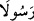
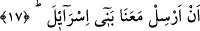
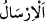
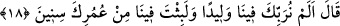

28. Musa devamla şunu söyledi: “Şâyet aklınızı kullansanız (anlarsınız ki), O,
doğunun, batının ve ikisinin arasında bulunanların Rabbidir.”
29. Fir’avn: “Benden başkasını ilah edinirsen, andolsun ki seni zindanlıklardan
ederim!” dedi.
30. Musa: “Sana apaçık bir şey getirmiş olsam da mı?” dedi.
31. Fir’avn: “Doğru söyleyenlerden isen, haydi getir onu!” diye karşılık verdi.
“Haydi Fir’avn’a gidip deyin ki: “Gerçekten biz,” her ikimiz “âlemlerin Rabbi’nin
elçisiyiz;”
Fir’avn; Velîd b. Mus’ab’dır. Künyesi Ebü’l-Abbâs’tır. İsminin Muğîs, künyesi Ebû
Mürra olduğu uzun bir müddet yaşadığı da söylenmiştir.
Fir’avn’a gidin ve ona deyin ki: Biz, her birimiz, âlemlerin Rabbı olan Allah’ın
elçileriyiz.
Bazıları der ki: “Âyette
(iki rasûlü)” denilmemiştir. Çünkü Mûsâ (a.s.) kendisi
mustakil rasûl idi. Hârun (a.s.), risâlette ona tâbî olarak onu doğrulayan bir yardımcı
idi.
17. İsrailoğullarını bizimle beraber gönder.
Burada “
(gönderme)” salmak, serbest bırakmak anlamında kullanılmıştır. Yani,
bizimle birlikte atalarının memleketi olan Şam diyarına gitmeleri için onları kendi
hallerine bırak. Söz şudur: İsrailoğullarını bizimle gönder, yani onları bırak da bizimle
Şam bölgesine gelsinler; zira orası atalarının yurdudur.
Fir’avn, İsrâiloğulları’nı dört yüz sene köle edindi. Bu zamanda sayıları altı yüz otuz
bindi. Mûsâ (a.s.) Mısır’a gitti, Hârun (a.s.) da oradaydı. İkisi buluşunca geceleyin
Fir’avn’un kapısına gittiler. Mûsâ (a.s.) asasıyla kapıyı çaldı. Kapıcılar korktu ve
“Kapıda kim var?” diye sordular. Mûsâ (a.s.): “Ben, âlemlerin Rabbinin elçisiyim.”
dedi. Kapıcı Fir’avn’un yanına çıkıp “Kapıda kendisinin âlemlerin Rabbinin
elçisi/rasûlü olduğunu iddia eden bir mecnun var.” dedi. Süddî’nin söylediği üzere
Fir’avn hemen onların girmesine izin verdi ya da sabaha kadar bekletti, sonra onları
çağırdı. İçeri girdiler ve Allah’ın elçiliğini yerine getirdiler. Fir’avn Mûsâ (a.s.)’ı
tanıdı. Çünkü kendi sarayında büyümüştü. Onun için şöyle dedi: